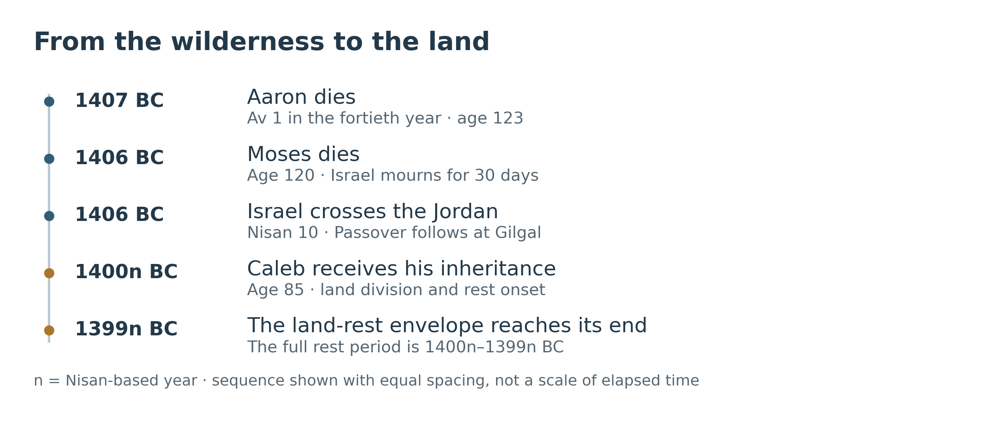
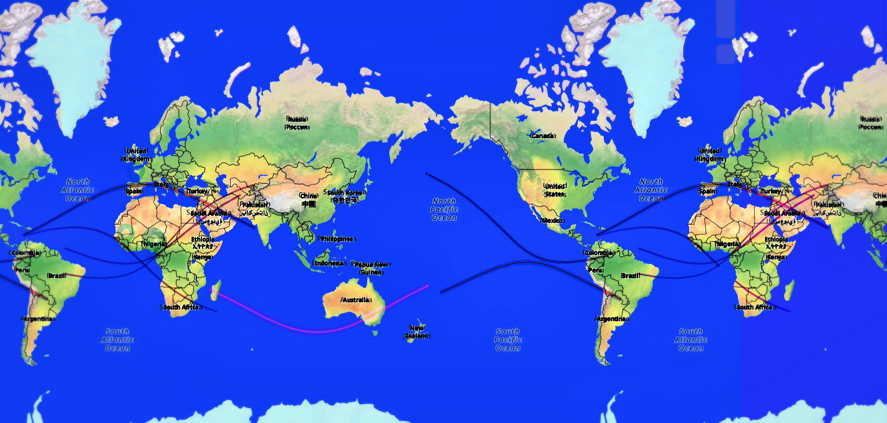
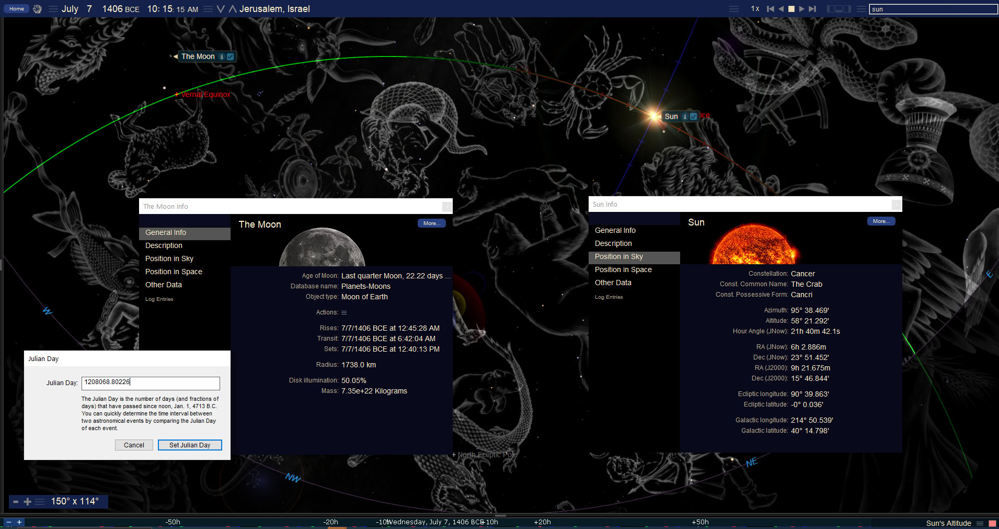
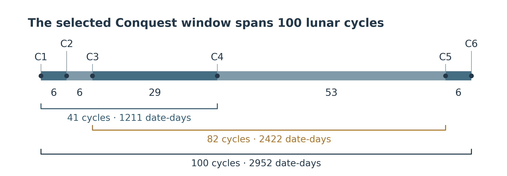

Joshua and the Crossing into the Land
Book 2 · Chapter 6
The promise survives the men who carried it
Israel leaves Egypt under Moses and enters the land under Joshua. Between those two events, a generation dies. Aaron dies. Moses sees the land but does not cross into it. The promise given to Abraham survives them all.
Joshua places the crossing beside the Exodus:
“For the LORD your God dried up the waters of the Jordan before you until you had crossed over, just as He did to the Red Sea, which He dried up before us until we had crossed over.”
— Joshua 4:23, BSB
That comparison gives this chapter its direction. The sea opens for Israel to leave slavery; the Jordan is stopped for Israel to enter its inheritance. I read the celestial events around the Conquest within that movement. The lights of heaven belong to the same God who commands the waters below.[1]
The earthly account has graves, an army, a river in flood, and land still to be taken. From above, the passing of a leader does not end the purpose he served. The promise is larger than one lifetime. That is why the succession from Aaron and Moses to Eleazar and Joshua matters to the argument of this book.
The crossing has its own date
I retain the Repository’s primary chronology: the Exodus in 1446 BC and the death of Moses and beginning of the Conquest in 1406 BC. Aaron’s death belongs to 1407 BC. Numbers 33:38 places it on the first day of the fifth month in the fortieth year after the departure from Egypt. The later name of that month is Av. Aaron was 123 years old.[2]
Deuteronomy records that Moses died at 120 and that Israel mourned him for 30 days. It does not supply a month and day for his death. I therefore distinguish the biblical mourning period from any proposed Adar date or eclipse association. The annular eclipse of January 18, 1406 BC belongs to the final wilderness season; its existence does not date Moses’ death.[3]
The Jordan crossing is more closely dated. Joshua 4:19 identifies the tenth day of the first month, Nisan 10. Israel camps at Gilgal, the wilderness-born males are circumcised, and the people keep Passover. They eat the produce of the land, and the manna ceases. Those events establish the sequence before I compare it with the sky.[4]
The end of the campaigns also needs a distinction. Current Canon places Caleb at 85, the land division, and the onset of the rest period at 1400n BC. The suffix n identifies the Nisan-based year. The rest period extends through 1400n–1399n BC. Thus, 1399 BC can serve as the closing comparison year without moving Caleb’s age-85 statement out of its canonical 1400n BC setting.[5]


Caleb says that he was 40 when Moses sent him to spy out the land, and that 45 years have passed since that promise. His age is therefore 40 + 45 = 85. The 45 years begin with the spying mission, not automatically with the departure from Egypt. The man who believed the promise is still there to receive his inheritance when the land rests from war (Joshua 14:7–15).
Six selected eclipses around the Conquest
The supplied Conquest study selects six solar eclipses from July 25, 1407 BC to August 24, 1399 BC. NASA’s catalog confirms all six. They comprise four total eclipses, one annular eclipse, and one hybrid eclipse, whose central path changes between annular and total phases. All dates below are Julian.[6]
| Selected event and date | Eclipse type | Sun within modern IAU boundaries |
|---|---|---|
| C1 · July 25, 1407 BC | Total | Leo |
| C2 · January 18, 1406 BC | Annular | Aquarius |
| C3 · July 14, 1406 BC | Total | Leo |
| C4 · November 17, 1404 BC | Total | Sagittarius |
| C5 · March 1, 1399 BC | Hybrid | Pisces |
| C6 · August 24, 1399 BC | Total | Virgo |
These are selected events. The complete catalog contains 19 solar eclipses within the same opening and closing dates. The selection is what supplies the six strokes discussed here; six is not the total number of eclipses that occurred.[7]
The region names also matter. The March 1 hybrid lies in Pisces, the Fishes. It should not be assigned to the separate constellation Piscis Austrinus, the Southern Fish. Conventional constellation pictures may reach across formal boundaries, but a picture and a measured sky region serve different purposes.[8]
The calendar associations are a further layer. I consider the opening Lion eclipse beside Aaron’s Av 1 death, and the July 1406 eclipse beside the approach to Tammuz. In the source reconstruction, that July event belongs near the Sivan–Tammuz boundary, not Av 1. These associations depend on the rule used for the beginning of the month and for intercalation. A solar eclipse supplies an astronomical new moon; it does not supply a recovered announcement of the first crescent in ancient Israel.[9]
The catalog dates are dynamical-time labels. With NASA’s modeled conversion to Universal Time, the greatest phases of C1 and C4 fall on the preceding civil dates. I retain the catalog labels consistently in the tables and whole-date arithmetic. They should not be transferred without conversion to an exact local evening or anniversary.
A river and a fish across the map
The supplied overlay brings the six selected central paths onto one repeated world map. Their curves form the proposed Aleph–Tav and fish design. I retain this image because it makes the geographic comparison visible. A reader can examine the actual arrangement rather than being asked to imagine it from a list of dates.
The Hebrew comparison uses ancient Hebrew, or paleo-Hebrew, letterforms. Chapter 9 explains my personal review of the eclipse maps from 3000 BC to AD 3000 and the judgment involved in recognizing these shapes. I find the first-century letter and fish forms clearest; the earlier related outlines here remain part of the wider comparison. Chapter 14 develops the later fish image.


The image includes an additional stroke from January 28, 1453 BC. That is the earlier hybrid introduced in Chapter 5. Its stroke is added separately to the six Conquest events. The earlier hybrid and the March 1, 1399 BC hybrid belong to Saros series 27 and are separated by 669 lunations: exactly 3 × 223, or three Saros cycles.[10]
This gives a real astronomical connection between the two strokes. The resemblance of the completed overlay to Hebrew letters or a fish remains my visual reading of selected paths on this map projection. Repeating the map displays the continuation across its edges; it does not create additional eclipses. Nor does the drawing demonstrate that all the paths crossed the land of Israel. In particular, the opening 1407 BC total eclipse has its central route across the Pacific and South America. It cannot serve as a central-path signature along Israel’s northern border.[11]
The river imagery takes its meaning from the biblical account. Joshua 3:16 says the water backed up at Adam while the people crossed opposite Jericho. Revelation 12 describes the serpent pouring out a river after the woman, and the earth swallowing that river. I read these accounts together as deliverance through a barrier that would otherwise engulf God’s people. I am making a typological comparison; John does not identify his river as the Jordan.[12]
Seen from the ground, the crossing is a people moving through a dry riverbed. Seen within the larger scriptural account, it is a people being brought through death and judgment toward an inheritance. The twelve stones carry that witness forward. They remain for children who did not see the river stop.
The day Joshua spoke to the Sun and Moon
Joshua 10 brings the two great lights directly into the battle. After an all-night march from Gilgal, Joshua surprises the attacking kings at Gibeon. The fighting moves toward Beth-horon. Then Joshua speaks:
“O sun, stand still over Gibeon, O moon, over the Valley of Aijalon.”
— Joshua 10:12, BSB
The account says the Sun delayed going down about a full day. I take that as the action of God described in the text. An ordinary solar eclipse lasts far too briefly to account for it, and the eclipse examined here occurs on another proposed date.[13]
The working reconstruction is July 7, 1406 BC, seven calendar days before the July 14 total solar eclipse. Scripture supplies neither that Julian date nor a modern clock hour. The proposal asks whether the ordinary sky immediately before such an intervention could fit the arrangement of Sun and Moon in Joshua’s words.
The supplied morning view is worth keeping. It shows the Sun near the solstitial region and the last-quarter Moon in Aries. A waning Moon can share the morning sky with the Sun, with the Sun in the eastern half and the Moon in the western half. That is the broad astronomical relationship the proposal needs.
The ground has a corresponding east–west arrangement. Using the locations supplied in the study, Gibeon and Aijalon lie about 15.5 km apart, with Gibeon to the east and Aijalon to the west. That helps explain why the two place names invite comparison with the two lights. It does not locate Joshua at their midpoint or make the lights lie exactly on the bearings of both towns.[14]


A separate ordinary-sky calculation illustrates the limit. At 10:15 in local mean solar time near that midpoint, on the proposed date, the Sun is about 67 degrees above the horizon at azimuth 104 degrees; the Moon is about 20 degrees high at azimuth 251 degrees. Azimuth is measured clockwise from north, so east is 90 degrees and west 270. This is an eastern Sun and a western Moon, with a substantial southerly component. It is not an exact alignment along the two town bearings. Approaching noon, the Sun climbs while the Moon descends toward the western horizon.[15]
The software clock printed in the supplied image is preserved as part of that original reconstruction. It is not an ancient recorded hour and should not be assumed to use the same time basis as the separate local-mean-time calculation. The useful result is the morning arrangement and lunar phase. The precise historical hour remains open.
Both July 7 and July 14 are Wednesdays in a backward extension of the ordinary Julian week. This invites comparison with the Wednesday quarter openings of the 364-day calendar discussed elsewhere in the book. It does not measure how long the miracle lasted, establish an ancient quarter boundary, or demonstrate that a lengthened Wednesday repaired a calendar fraction. The account’s claim remains that God answered Joshua and fought for Israel.
What the seventy and seventy seven count requires
The source links the crossing, the proposed long day, and the eclipse with a 70-then-77 count. The starting point and counting convention must be stated.
From April 28 to July 7, the difference between the Julian dates is 70 days. From April 28 to July 14, it is 77 days. Those are elapsed date differences. If April 28 is counted as day 1, the ending days are 71 and 78.
An inclusive count of 70 and 77 instead begins on April 29. Under that choice, July 7 is day 70 and July 14 is day 77. The arithmetic works, but identifying April 29 as the historical Nisan 10 requires a calendar reconstruction beyond Joshua 4:19. The supplied April 28 afternoon sky frame does not independently establish that identification or a sunset boundary.[16]
I retain the proposed cadence with those conditions visible. The seven-day separation between the two July dates is straightforward. The connection to the Jordan crossing is a further proposal. Its meaning should not depend on calling an elapsed count inclusive or silently moving the crossing by a day.
One hundred lunar cycles and the approach to rest
The longer count is firmer because NASA’s lunar-cycle indices identify the intervals directly. The selected Conquest events have consecutive gaps of:
6 + 6 + 29 + 53 + 6 = 100 lunations.


The first event to the fourth spans 41 lunations and 1211 date-days. The third event to the fifth spans 82 lunations and 2422 date-days. The second interval is exactly twice the first in both these counts. Those are overlapping intervals with different starting points; they are not consecutive halves of the 100-month window.[17]
An eclipse year is about 346.6 days, shorter than an ordinary solar year. Thus, 1211 days is approximately three and a half eclipse years, and 2422 is approximately seven eclipse years. These descriptions do not turn 41 lunar months into 42 months, or 1211 days into Revelation’s 1260 days. Aaron’s or Moses’ mourning month is not a license to change the measured interval.
The complete window spans 2952 date-days. Chapter 5 established the earlier Exodus window of 100 lunations and the 475-lunation interval between its end and this window’s beginning. The combined arrangement remains 100 | 475 | 100. The two 100-month spans have different whole-day lengths because lunar months do not all have equal duration.
The March 1399 hybrid also leads forward to the annular eclipse of March 10, AD 80, which will be examined with the later fish imagery. That relation is 18,281 lunations = 82 × 223 − 5. It must retain the subtraction of five lunar cycles. Unlike the three-Saros hybrid pair, this is not an exact Saros return or a recurrence within the same series.[18]
The Morning Star belongs to the wider setting
Venus supplies another feature of the Conquest-era sky. NASA lists transits across the Sun on May 23, 1407 BC and May 20, 1399 BC. Both occur in Gemini. The second date corrects the May 10 date in the early source text.[19]
They belong to the same broad era as the selected eclipses, but their positions within it must be described accurately. The first transit precedes the opening July 1407 eclipse by 63 date-days. The second precedes the closing August 1399 eclipse by 96. They neither both lie inside the six-eclipse window nor bracket that entire window.
I consider Venus in relation to Christ’s identification as the bright Morning Star. Its transits are not themselves ordinary dawn appearances: during a transit Venus lies in front of the Sun. The symbolism concerns the identity developed through the book, not a claim that Israel watched an obvious morning procession across the solar disk. Heaven’s witness need not have been understood by the people then crossing the land.
The same perspective applies to the lunar event associated in the supplied studies with Aaron’s mourning season. NASA classifies it as penumbral, under the dynamical-time catalog date August 9, 1407 BC; its modeled greatest phase falls on August 8 in Universal Time. It does not enter the Earth’s dark umbra. It should therefore not be called a partial umbral eclipse or a blood moon. The event can remain within the celestial comparison without giving it a red appearance the calculation does not establish.[20]
Egypt’s calendar, Sirius, and the mourning-month comparisons deserve their own treatment. They follow in the next chapter. Here, the sequence is sufficient: Aaron dies, Moses dies, and Israel crosses. The heavens continue their appointed courses while the earthly leadership changes.
Joshua points beyond the land he entered
The Conquest brings the promise to Abraham into a new stage. The people eat the land’s produce, receive their portions, and experience rest from the main campaigns. Yet Scripture itself looks beyond that rest. Hebrews 4:8 says that if Joshua had given them rest, God would not have spoken later about another day. The inheritance reached under Joshua is real, and it leaves a further promise open.[21]
That is where the earthly and heavenly readings meet. The sky comparisons around the Conquest return us to the Sun and Moon, the river, the people delivered, and the approach to rest. I read those patterns toward Christ. Their meaning is not exhausted by what an Israelite soldier could have recognized during a battle.
John lets us see a woman sustained in the wilderness while a conflict takes place in heaven. Joshua lets us see a commander who discovers that the Lord’s army is already present before Jericho. The visible army is part of a larger field. I want the reader to see that field without losing sight of the ground on which the people walked.
Aaron and Moses do not cross the Jordan. Israel does. The deaths of the servants do not cancel the promise, and possession of the land does not exhaust it. The movement continues toward the One who can bring His people into the enduring rest of God.
Source notes
1. Joshua 3:14–17; 4:19–24. The opening quotation is Joshua 4:23, Berean Standard Bible. The comparison between the sea and the Jordan is explicit in Joshua; the celestial reading is my interpretation. Return
2. Numbers 33:38–39; Numbers 20:22–29. Current File 6, The Judges Bridge, header and Aaron–Moses controls, retains Aaron’s 1407 BC death and the primary 1406 BC Conquest. The biblical day/month comes from Numbers; the BC placement follows the Repository chronology. Return
3. Deuteronomy 34:5–8. The 30-day mourning is textual; January eclipse or Adar death-day identifications are proposed associations, not dates supplied there. This chapter does not infer an extra Adar or its boundaries from the mourning period. Return
4. Joshua 4:19; 5:2–15. Nisan names the first month in the later terminology used throughout this book. Joshua 3:15–16 locates the crossing in flood conditions and names Adam upstream. Return
5. Current File 6, §1 and the Conquest / Land-Rest Machine Guard: 1406n → 1400n BC is the six-year process; 1400n BC is Land Division / Caleb 85 / rest onset; 1400n–1399n BC is the rest envelope. Joshua 14:7–15 supplies Caleb’s ages and the 45-year statement. These calendar states should not be collapsed into a single 1399 BC event. Return
6. Fred Espenak and Jean Meeus, NASA/GSFC, Five Millennium Catalog of Solar Eclipses, astronomical years −1499 to −1400 and −1399 to −1300, entries 01413, 01414, 01415, 01420, 01430, 01431. Astronomical year −1405 means civil 1406 BC. Integer noon date references are 1207722, 1207899, 1208076, 1208933, 1210498, 1210674. Return
7. The included calculation record preserves all 19 catalog entries from 01413 through 01431, so the six-event selection can be checked. The source’s separate comparison of six selected Exodus path strokes with six Conquest strokes would contain nine totals, one annular, and two hybrids. It is a selected twelve, not an exhaustive twelve-event catalog; the old ten-total count is not retained. Return
8. Sun positions were calculated using Swiss Ephemeris with the explicit Moshier model and classified against modern IAU boundaries using Astronomy Engine’s J2000 constellation function. The six regions are Leo, Aquarius, Leo, Sagittarius, Pisces, Virgo. These are modern positional labels, not evidence that ancient Israelites used those exact boundary definitions. Methods and reproducible output accompany this chapter. Return
9. Calendar labels in the raw Section 7 and the corrected master’s Conquest chapter are reconstructed. July 14, 1406 BC is retained near Sivan/Tammuz in that model, not Av. Conjunction does not identify a first-crescent sighting or certify the exact evening on which Tammuz began. For catalog TD, modeled UT, and ancient path sensitivity, see NASA’s catalog key and Delta T uncertainty discussion. Return
10. NASA entries 01306 and 01430, both Saros 27: lunar indices −42695 and −42026 differ by 669 = 3 × 223. The named Julian dates differ by 19756 days. For the Saros definition, see NASA, Periodicity of Solar Eclipses. The supplied overlay IMG0472 is preserved unchanged, including its repeated map and added 1453 BC stroke. Return
11. NASA entry 01413 and the current corrected master’s §9.7 remove the former northern-border claim for C1. The separate supplied regional crop IMG0440 concerns the July 1406 eclipse, not C1; it is not silently used as evidence for the 1407 route. Exact local crossings require their own Earth-rotation assumptions and path calculation. Return
12. Joshua 3:15–17; Revelation 12:13–17. The river comparison is typological. Neither the constellation artwork nor the map establishes that John intended a specific eclipse route or geographic location. Return
13. Joshua 10:9–14. The BSB wording distinguishes the all-night approach, the spoken command, and the delayed sunset. July 7 is the author’s working date; July 14 is NASA’s independently cataloged total eclipse. The latter is not offered as a natural mechanism for the miracle. Return
14. Supplied coordinates: Gibeon 31°50′51″ N, 35°11′11″ E; Aijalon 31°50′25″ N, 35°01′21″ E. A spherical calculation gives about 15.5 km separation; from their midpoint, bearings are about 87 degrees and 267 degrees. The coordinates define a comparison baseline, not Joshua’s established position or a surveyed ancient battlefield. Return
15. Ordinary-sky illustration: Swiss/Moshier, July 7, 1406 BC, source-coordinate midpoint, elevation 700 m, NASA July ΔT 33105 seconds. Local mean solar time is UT plus longitude/15 hours; geometric center altitudes exclude refraction and terrain. At 10:15 LMT, Sun azimuth/altitude ≈104/67 degrees, Moon ≈251/20. The supplied IMG0073 clock is not recertified as LMT; differing time settings can explain differing displayed angles. No ancient exact hour or miraculous change in motion is derived from an ordinary ephemeris. Return
16. The raw start frame JD 1207999.0835 converts to Julian April 28, 1406 BC at about 14:00 UT, not an independently measured sunset. Its July frame JD 1208068.7500 is July 7 at 06:00 UT. Integer date differences and inclusive day positions are separate operations. April 29 → July 7/14 gives inclusive 70/77; April 28 gives elapsed 70/77 or inclusive 71/78. No historical Nisan 10-to-Julian-date lock is certified here. Return
17. Consecutive selected NASA lunar-index differences are 6, 6, 29, 53, 6; named-date gaps are 177, 177, 857, 1565, 176 days. C1→C4 is 41 lunations / 1211 days; C3→C5 is 82 / 2422; C1→C6 is 100 / 2952. Eclipse-year descriptions are approximate. Chapter 5’s earlier 100-lunation span is 2953 days; its intervening 475-lunation gap is 14027 days. The new diagram uses lunar-cycle spacing, not equal civil-year widths. Return
18. NASA entries 01430 and 04972: −42026 → −23745 gives 18281 lunations, and 82 × 223 − 5 = 18281. The named-date interval is 539849 days. Saros series differ, 27 and 60. The AD 80 event’s fuller interpretation belongs to the later chapter on the fish and the nations; it is not moved into the AD 70 historical setting. Return
19. NASA, Six Millennium Catalog of Transits of Venus, astronomical years −1406 May 23 and −1398 May 20; listed greatest times about 05:57 and 23:03 UT. The geocentric Sun is in Gemini under the modern boundary check. Transit dates and a broad Morning-Star interpretation do not imply a recorded local sighting. See Revelation 22:16 for Christ’s title. Return
20. NASA, Five Millennium Catalog of Lunar Eclipses, astronomical years −1499 to −1400, entry 01435, −1406 August 9 TD: type Nx, penumbral magnitude 1.0588, umbral magnitude −0.0223. With catalog ΔT, modeled greatest UT is August 8 about 16:39. The event is penumbral only; the source’s correction against blood-moon language is retained. Egyptian civil/lunar year identifications are reserved for Chapter 7. Return
21. Hebrews 4:8–16; Joshua 5:13–15. The final reading follows the distinction Hebrews makes between Joshua’s entry and the continuing promise of God’s rest. Return
Scripture quotations are from the Berean Standard Bible (BSB), dedicated to the public domain. Berean Bible.
← Previous: Chapter 5 — The Exodus in the Heavens
Book 2 contents
Next: Chapter 7 — Egyptian Years and the Calendar of Israel →